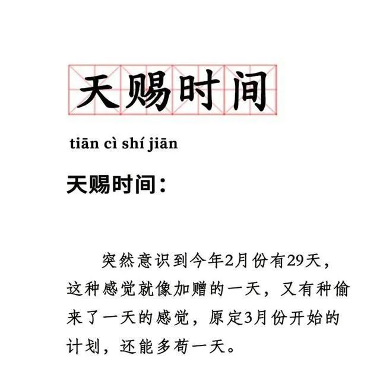
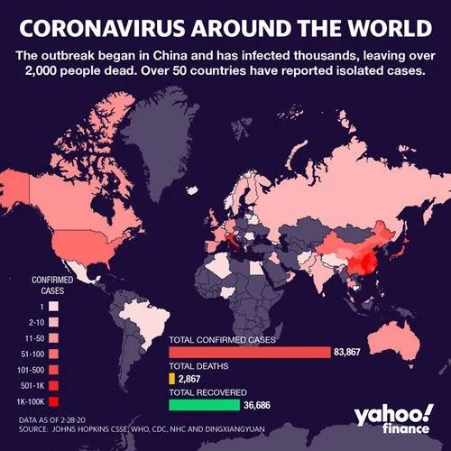
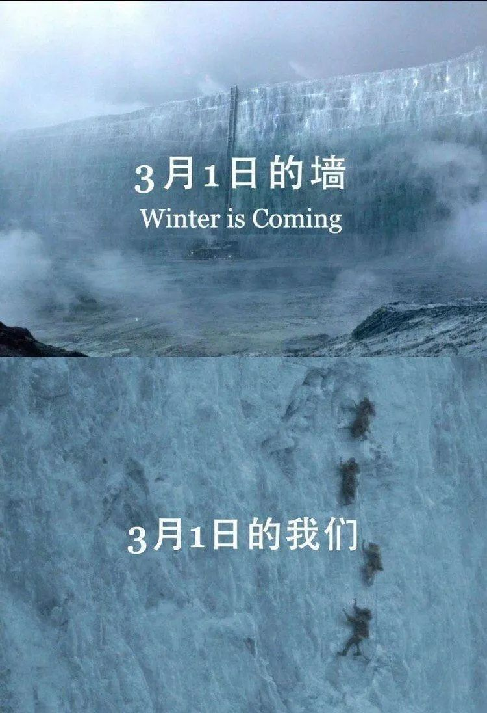

生活的刺
原文链接 备份链接 2020年2月28日。 农历二月初六。 武汉封城第三十七天。 天门封城第三十六天。 阴雨绵绵，闭关继续。当日子渐复寡淡，米兰•昆德拉的“幸福就是重复同样的事情”，就成了在家坐月子自我安慰的一剂良方。感观在重复中沉溺麻 …

2020年2月29日。
农历二月初七。
武汉封城第三十八天。
天门封城第三十七天。
阴晴不定。
中午大方伯做了翻饺子，尝起来不比买的差，表示非常满意自己的手艺。晚上和小方伯出门取网上订的菜，发现小区门口的街道已被完全封死。我只能踮起脚，隔着墙和对方一起伸手，才把菜取回。两袋米，几蔸白菜和包菜、几根莴苣和黄瓜，还有一袋西红柿和馒头，蒜苗、胡萝卜和土豆今天没货明天再送。伯伯说起码可以管个把星期了。巧的是送菜的居然是一位亲戚，问他需不需要志愿者，他说算了吧，太累了，他自己头都大了，事多且杂每天忙到一两点。唏嘘之余只好道声辛苦保重。


余华在《活着》的序中写道：“生活和幸存只是一枚分币的两面，它们之间轻微的分界在于方向的不同。”凛冬将至，我们这些苟且活下去的人，勉强只能称之为幸存者。作为幸存者，“我只担心一件事，就是怕我自己配不上我所受的苦难。”（陀思妥耶夫斯基）







水妈
长按二维码向我转账
受苹果公司新规定影响，微信 iOS 版的赞赏功能被关闭，可通过二维码转账支持公众号。
原文链接 备份链接 2020年2月28日。 农历二月初六。 武汉封城第三十七天。 天门封城第三十六天。 阴雨绵绵，闭关继续。当日子渐复寡淡，米兰•昆德拉的“幸福就是重复同样的事情”，就成了在家坐月子自我安慰的一剂良方。感观在重复中沉溺麻 …
原文链接 备份链接 2020年2月26日。 农历二月初四。 武汉封城第三十五天。 天门封城第三十四天。 淅沥沥的雨竟下了一夜。 猜中一个心照不宣的谜底，失去一场镜花水月的愁绪，破掉一段孤厢情愿的执著——大道理比谁都会讲的我，碰到“心中贼” …
原文链接 备份链接 2020年2月22日。 农历正月廿九。 武汉封城第三十一天。 天门封城第三十天。 印象中，毕业后除了08年那场大雪，迄今没与家人同居如此之久。很多人——当然是没事蜗居在家的人，谈到这次疫情乐观的看法，相当于给自己放了一 …
原文链接 备份链接 2020年2月21日。 农历正月廿八。 武汉封城第三十天。 天门封城第廿九天。 封城一月，本以为可以看到胜利的曙光了，今天的消息感觉仍要打持久战。这病毒狡猾到骗过医护，出院之后竟有复发之虞。有一个观点，看报道在讲，群里 …
原文链接 备份链接 2020年2月20日。 农历正月廿七。 武汉封城第廿九天。 天门封城第廿八天。 不用再回复了啊，昨天前天两篇都没了。尸骨无存。我再三声明无力吐槽，也怕自己掉进非吐这种槽才能有所表达的陷阱，其实更怕这号没了。没备小号，这 …